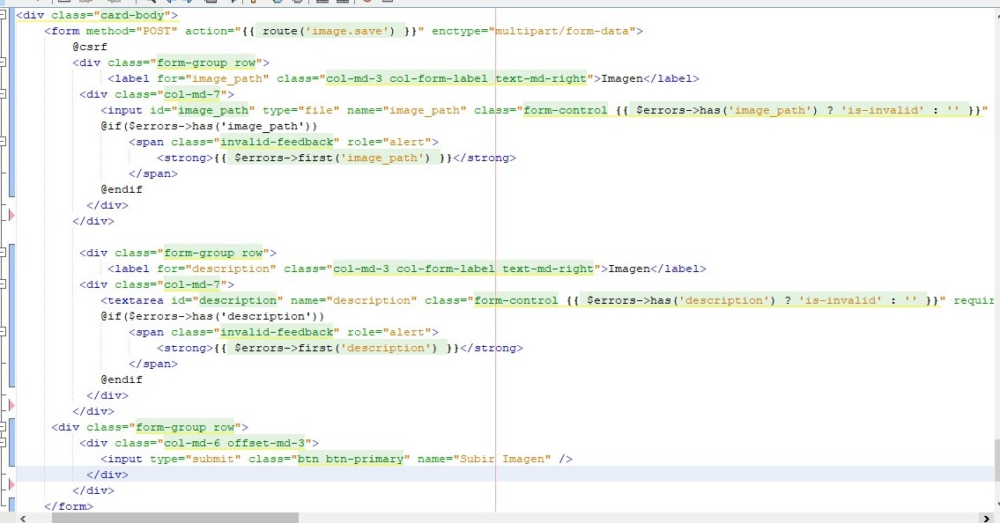

Desarrrollo
Como parte final del Curso que tome acerca de PHP, en este curso se aprendió a utilizar uno de los frameworks de desarrollo para PHP, Laravel como proyecto final consistió en realizar una aplicación web con funciones similares a la de Instagram, decidi colocar este proyecto, si bien es cierto podria decir es escolar, con esto puedo comprobar que tengo conocimientos basicos en Laravel, y por lo menos, aseguró tener las suficientes habilidades para realizar un CRUD con Laravel, para la parte de la base de datos se utilizó como gestor MySQL.
Marco de Trabajo
Se muestran a continuación algunas de las tecnologías usadas en el desarrollo del proyecto.
Tecnologías Usadas:
- Laravel:
Laravel es un framework para el desarrollo de aplicaciones web y servicios web con PHP, es uno de los frameworks más populares y fáciles de utilizar, además de ser de código abierto.
- WampServer:
Como servidor local para recibir las peticiones y procesarlas.
- Otras:
- MySQL
- Netbeans
- Boostrap
Ejemplo de Código
En el siguiente se puede observar un formulario para subir una imagen, en este código se observa las etiquetas de boostrap, incluyendo las que tienen las plantillas con blade.
Imagenes de muestra
En el siguiente slider se muestran algunas imágenes acerca del funcionamiento de la aplicación.